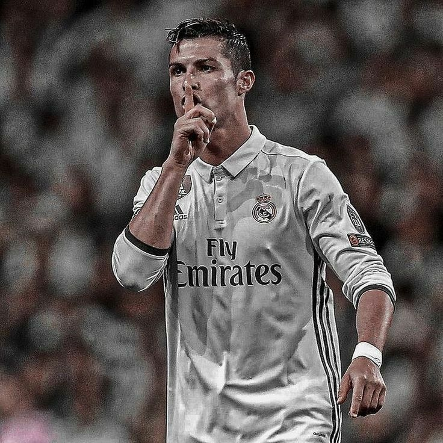

CR7'S Biography
The greatest of all time(G.O.A.T)

Ronaldo at Real Madrid
Here's a timeline of Ronaldo's Career:
- 1985 - Born in Madeira, Portugal
- 2002 - Made his professional football debut for Sporting Lisbon
- 2003 - Moved to Man U for a british record fee
- 2003-2007 - Dropped impressive performances for Man U establishing himself as one of the best footballers in the world
- 2008 - Won his first baloon D'or after a record-breaking season for Man United
- 2009 - Moved to Real Madrid where his rivalry with Leo Messi was born
- 2010-2016 - He won 3 baloon D'ors during this period cementing himself as won of the Greatest to ever do it
- 2017 - Finally equalled Messi's record of 5 baloon D'ors after putting on the best UCL K/O performances that season
- 2018-2025 - During this period he moved to Juve then to United and then eventually ended up at Al-Nassr where he is the highest earning athlete in the world